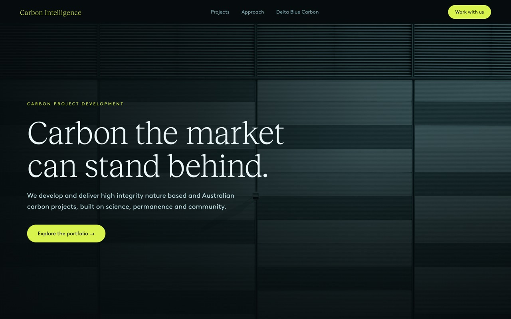
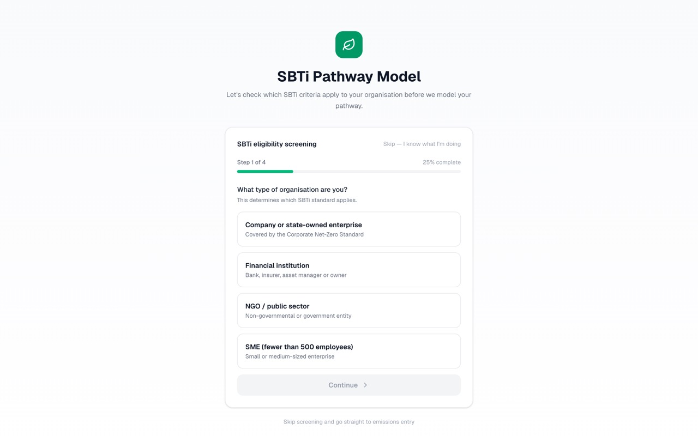
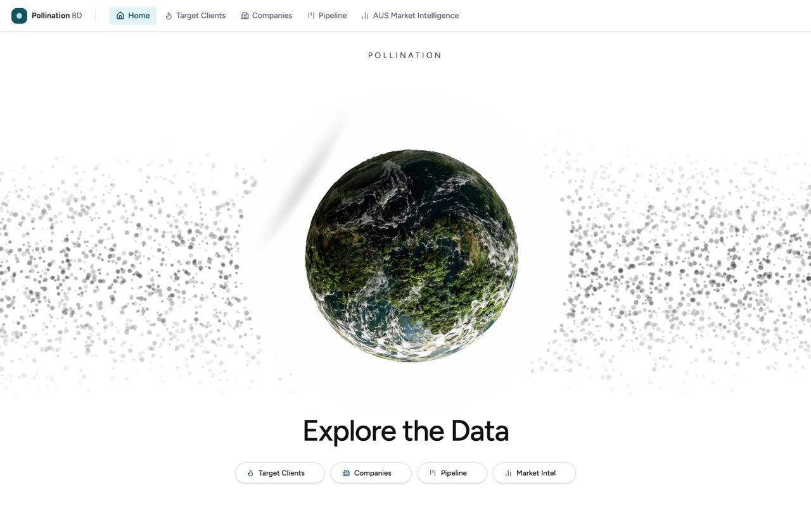
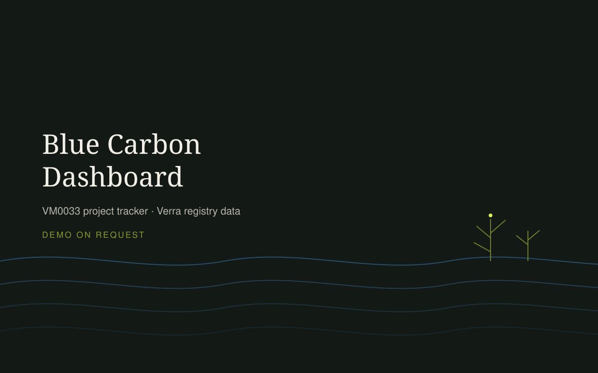
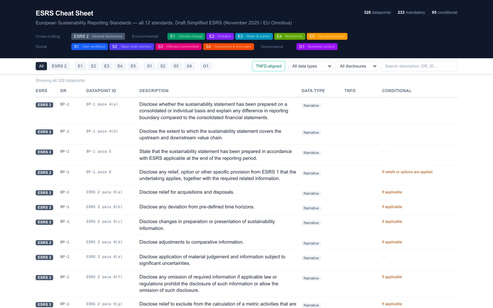
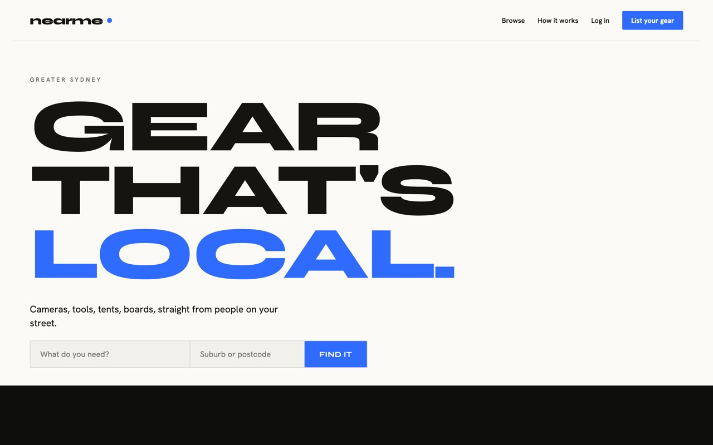
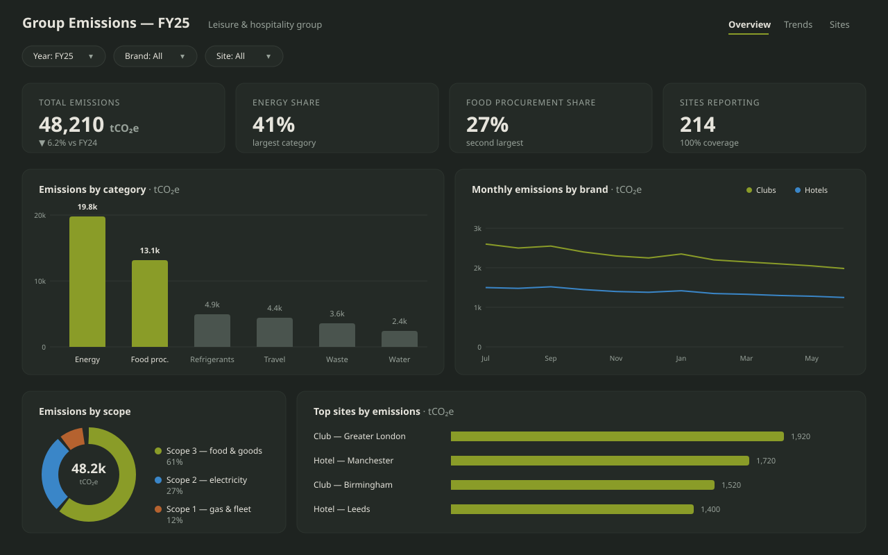
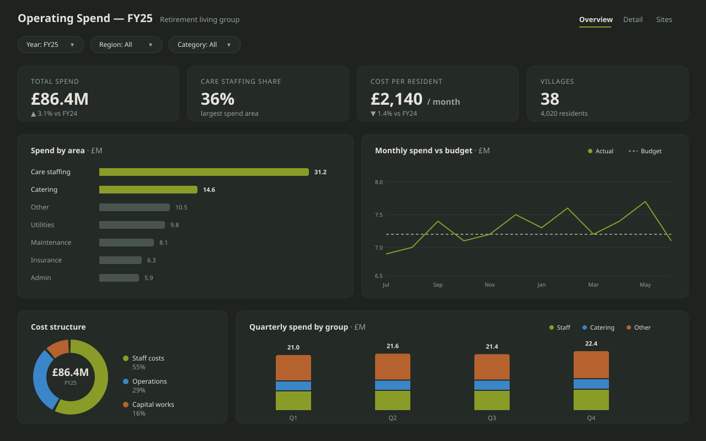

Angus Harman CA · Climate, Procurement & AI · Sydney
Chartered Accountant with 10+ years across climate advisory, procurement and business transformation.
Not case studies — working software you can open right now. Every one of these was scoped, built and deployed by me.

Market-intelligence platform over the voluntary carbon market: an internal prospect CRM covering 1,000+ companies with segmentation, fit scoring and outreach logging, a database of 11,659 carbon projects across five registries, demand analytics, and a weekly AI-generated market digest — fed by automated pipelines from OffsetsDB and the Australian Clean Energy Regulator. Built for and used on project work by origination and investment teams.
Open live tool
Guided wizard that screens which SBTi criteria apply to an organisation, then models its science-based decarbonisation pathway from its emissions data.
Open live tool
Business-development platform: target-client identification, company profiles, deal pipeline and Australian market intelligence — scoring companies on climate commitments, emissions obligations and relationship history to prioritise where the commercial effort goes.
Open live tool
Project tracker for blue-carbon (VM0033) projects built on Verra registry data — monitoring project pipeline and issuance.
Demo on request
Interactive reference covering all 12 EU sustainability reporting standards — 328 datapoints, filterable by standard, data type and TNFD alignment.
Open live tool
Peer-to-peer gear rental marketplace for Greater Sydney — search, listings and bookings, built end to end. Includes the privacy and security layer a marketplace handling strangers, money and personal data needs: hashed credentials and signed session tokens, email and Stripe Identity verification gates, expiring password-reset tokens, role-based access, and risk-event and webhook auditing — with card details handled by Stripe and never stored in my own database.
Open live siteBusiness intelligence
Power BI is how I turn messy operational data into decisions: supplier, activity and finance data consolidated from multiple client systems into single report models, including bulk uploads of multinational procurement data cleansed, mapped and validated on load. That analysis identified 80% of emissions hotspots across £500m+ supply-chain programmes and drove a 24% reduction in Scope 3 exposure. The dashboards below are representative rebuilds; client data stays confidential.

Emissions reporting across two national leisure and hotel groups, unifying site-level energy data with procurement records — surfacing energy use and food procurement as the two dominant emission areas and giving each business a clear reduction focus.

Spend analysis across the operating areas of a retirement-homes business — where the money goes, by category and site, so leadership could see cost concentrations and act on them.
Three shapes, depending on what you need. All of them start with a conversation and a clear scope before anyone commits to anything.
A set number of days a week inside your team, owning a workstream end to end. Best when the work is ongoing and needs someone accountable rather than advising from outside.
2–3 days/weekFixed scope, fixed outcome — a platform selected and implemented, a procurement function stood up, a reporting model built and handed over. Priced on the work, not the hours.
4–16 weeksA short, sharp look at a problem you can't yet name — where the emissions or the spend actually sit, why the data can't be trusted, what to do first. Ends with a decision, not a deck.
1–2 weeksChartered Accountant, ten years across Big 4 consulting, in-house leadership and climate investment. The full history, if you want it.
Download full CV (PDF)Built carbon market insights dashboards, hosted on Vercel and used on project work, integrating multiple registry and market data sources into a single view of project pipeline and status, credit issuance volumes and pricing, and project economics — significantly reducing manual research time. Built an internal prospect CRM covering 1,000+ companies with segmentation, fit scoring and outreach logging. Deployed internal AI tools and automations replacing manual research, market intelligence and document production with repeatable processes, and designed and delivered an internal AI session teaching colleagues to build their own reusable Claude skills ahead of the firm's move to Claude Enterprise. Advises ASX-listed corporates and government on climate strategy and disclosure under AASB S2 and IFRS S2, including executive scenario modelling using NGFS and Oxford Economics datasets.
Advised global real estate and food sector clients on carbon accounting platform selection, project managing the tender and data integration process. Led £500m+ supply-chain transformation programmes — identifying 80% of emissions hotspots through Power BI analysis and delivering a 24% reduction in Scope 3 exposure. Owned the ecoinvent emissions-factor database licence end to end, from negotiation with procurement through to allocation and utilisation across the team. Defined data standards, boundaries, calculation methods and source ownership across client reporting under the GHG Protocol, SBTi, CSRD and TCFD; managed sales pipeline in Workday; and developed the strategy roadmap, operating model, KPI framework and governance design for NEOM's US$500B+ smart-city programme.
Built a new procurement function from scratch as a team of two — process, systems, data, supplier evaluation criteria and reporting across $220m of spend — delivering $8m of savings in year one. Owned FP&A for the function, building the budget, forecasts and monthly management reporting pack presented to the executive team. Cleansed and classified supplier and spend data into a single reliable view, and built the full Scope 1–3 emissions data model behind a 42% reduction target written into the terms of a Sustainability-Linked Loan. Acted as Interim Head of Sustainability.
Developed single-source-of-truth Power BI spend cubes for client procurement data, consolidating and cleansing large volumes of inconsistent transactional data from multiple source systems into common category taxonomies and supplier master data, with clear ownership and refresh rules. Used Power BI analysis to identify savings opportunities across categories, delivering 17% average cost savings. Led transformation programmes for KiwiRail ($1.2B capex), Auckland Airport ($500M infrastructure) and Metlifecare ($100M portfolio).
Co-founded and ran a sustainability consultancy — built the operating processes, systems and reporting the business ran on, with monthly investor reporting. Built NGO and corporate partnerships delivering measurable community outcomes; featured on TVNZ One News and national radio.
Qualified as a Chartered Accountant (CA ANZ), delivering financial advisory, tax planning and reporting to SMEs, companies and investors. Built financial models, cash-flow forecasts and scenario analysis underpinning client investment and operating decisions.
Chartered Accountants ANZ Excellence Award · Lincoln University Cricket and Academic Sports Scholarships.
Tell me the problem in a couple of lines. If I'm the right person you'll get a straight answer on scope and timing — and if I'm not, I'll say so.
Where I've worked